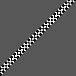
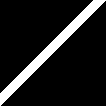
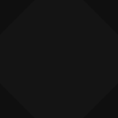
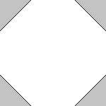

Retinotopic Mapping output files Tutorial
Document version:1.0
Author(s):Sven Gijsen
Date:July 2015
Introduction
This example tutorial (installed in the BrainStim\examples\\brainstim\advanced examples\Retinotopy Output\ directory) is a complete experiment that can be used for Population Receptive Field Estimation by making use of a visual Moving Bar stimuli presentation. This experiment can run the desired Retinotopic visual stimuli but also automatically generate all the files needed by the BrainVoyager software to perform a pRF analysis, see this document. Although this example tutorial is in line with the guidance of the online BrainVoyager Generating Binary Stimulus Frames document it can off course also be used on it's own.
Sub-directories and generated files
The experiment can create several files when run, these are stored in subdirectories and these are:
| Sub-directory | File-extension | Description |
|---|---|---|
| inputfiles | *.txt | these files are automatically generated while running the experiment. They store the used randomization (the position and angle of the Moving Bars). |
| logfiles | *.txt | these files contain the logged information of the experiment, these can be used afterwards for debugging purpose. |
| outputfiles | *.png | these automatically created files are image files(*.png) and store the Binary Stimulus Frames. These are activation maps for each presented moving bar (per position and angle). The PNG (*.png) format is a widespread used image format that stores the data compressed (but without loosing information!) and can be opened(viewed) with almost all image viewers. |
| prtfiles | *.prt | these automatically created files are Protocol files that describe experimental conditions and can be used in the BrainVoyager software. |
The files saved in the above sub-directories have a filename that contains a numeral substring that contains a unique timestamp of the moment the experiment was executed allowing you to easily identify/group these files. This numeral substring is composed of the following sections:
Year (4 digits) +
Month (2 digits) + Day
(2 digits) + Hour (2 digits) +
Minute (2 digits) + Second (2
digits)
ie. 20151015094949 is a timestamp from the 15th of
October 2015 at 9:49 am and 49 seconds
Generating Binary Stimuli Frames
Generating the Binary Stimuli Frames is achieved by enabling the OutputTriggerFrame parameter of the RetinoMapper Class object, read the RetinotopyMapper documentation for more information about this topic. After this output file(s) containing the pixel-level representation of the visual retinotopic stimuli in a binary form (at each moment the object derived from the RetinoMapper Class gets triggered) are saved to a file automatically.
Output Frame and Format
The generated output file(s) can contain data of the requested OutputFrameType (Mask or Frame) and are stored in one or more file(s) from a particular requested OutputFrameFormat (PNG, DAT or CDAT). The “Frame” OutputFrameType setting contains the full color visual stimuli pixel presentation, The “Mask” setting only contains the visual stimuli mask of the activated visual area in white and the remaining information in black, the latter one is what we need and therefore this example makes use of the “Mask” setting.
 
OutputFrameType = “Frame” and OutputFrameType = “Mask”
For this experiment we set the OutputFrameFormat parameter to PNG, the possible settings are::
-
“PNG”, the requested visual stimuli information is stored in one or more (*.png) file(s) for each generated visual output. The PNG (*.png) format is a widespread used image format that stores the data compressed (but without loosing information!) and can be opened(viewed) with almost all image viewers.
-
“DAT”, the requested visual stimuli information is stored in one or more (*.dat) file(s) for each generated visual output. The DAT (*.dat) format is a BrainStim format that stores the data uncompressed (raw) in a way that it can be processed very quickly in memory by BrainStim (or any other third party software tool) because the underlying pixel information can be accessed more directly. Unfortunately this type of storage takes much more disk space and can not be opened(viewed) with most image viewers.
-
“CDAT”, this is the same as the above “DAT” storage type but now all the generated visual output is saved in one single CDAT (*.cdat) (Concatenated DAT) file. This file has the same properties as the DAT storage type, but can be even quicker processed by BrainStim or an other third party software tool) because it now only needs to open and load one single file to memory for further processing. This file of course takes more space that a single DAT file because it stored all the generated visual output in one single file.
This experiment is configured to make use of the "PNG" OutputFrameFormat.
Executing the experiment
When you execute the experiment script file you first need to choose between three options:
- Run the experiment: This runs the Retinotopy Moving Bars stimuli presentation without using a previous used Moving Bars position and orientation randomization set. When it's done presenting the visual stimuli it automatically creates a *.prt file in the prtfiles sub-directory.
- Run the experiment (using an existing randomization set): This runs the Retinotopy Moving Bars stimuli presentation with using a previous used Moving Bars position and angle randomization set. You first need to choose this randomization set by browsing and selecting a previous created file inside the inputfiles sub-directory. When it's done presenting the visual stimuli it automatically creates a *.prt file in the prtfiles sub-directory.
- Generating Binary Stimuli Frames: This generates the Binary Stimuli Frames (*.png files) for an Receptive Field Estimation analysis of a previous executed Moving Bars experiment (same position and angle randomization set) by selecting a previous created file (again from the inputfiles sub-directory). The generated files are then automatically stored in the sub-directory outputfiles\RetinotopyMapper\<Timestamp>_Retinotopic Mapping Experiment\ while the experiment is running. Just before the script finishes you need to browse and select that sub-directory where the generated files are stored. This is then used for creating a single image file (*.png) that contains all the mean averaged pixel values of the generated Binary Stimuli Frames (*.png files). This file is then saved to the sub-directory outputfiles\RetinotopyMapper\.
Every time you run a Retinotopy Moving Bars stimuli presentation (option 1 and 2) it will automatically save the used Moving Bars position and orientation randomization to a file (inside the inputfiles sub-directory) while it's running. Important! You need to completely execute/finish the experiment to create a valid inputfile!
During the generation of the Binary Stimuli Frames (option 3) a Retinotopy Moving Bars visual stimuli presentation is also presented but then faster triggered and in a smaller visual stimuli window. Again you need to completely execute/finish the experiment for successfully generating all the needed files.
When running the Experiment you can also choose between the Experiment Mode:
- Test, with debugging information: used for testing or debugging purpose (all options) and for generating the needed Binary Stimuli Frames (option 3). This mode collects and saves a lot of of additional test/debugging information which may slightly slow down the experiment. The experiment is automatically triggered by a timer which has an interval time of 2 seconds.
- Optimized, without debugging information: no additional information is gathered, optimized for speed and should always be used for the "real" experiment when running the Retinotopy Moving Bars stimuli presentation (option 1 and 2). This experiment is not automatically triggered, triggering is now configured to each key press of keyboard key '5', depending of your hardware you can tweak this experiment to your needs and make use another triggering device like a Serial or Parallel Port.
Run the experiment
Let's first try option 1:
- Start BrainStim.
- Open the file MovingBarsRetinotopy.qs that is located in the Main Program Directory directory in the subfolder \Examples\BrainStim\Advanced Examples\Retinotopy Output\
- Execute the script file by pressing the green
Execute
 button
button- Choose to "Run the experiment" (-> Option 1)
- Choose "Test, with debugging information" for the Experiment Mode
- Press the Alt key to unlock the experiment
- Press the CTRL + t key combination to invoke a trigger and to start the experiment which is then automatically triggered each 2 seconds
- See what happens and wait untill the experiment ends.
Hint: you can optionally speed up
the experiment by holding down the CTRL + t
key combination.
The experiment starts and stopt with a fixation block (8 triggers per block) in which only a red fixation dot is presented allowing the subject to fixate to the center of the screen. After the first fixation block 3 repetitions of a MovingBar block are presented for 8 orientations (orientation angles: 0, 45, 90, 135, 180, 225, 270, 315) and for each orientation there are 12 positions presented. The orientations and positions are randomized and saved to a file in the inputfiles sub-directory. Each orientation/position pair is executed exactly once within each repetition of a block. The randomization remains the same for each MovingBar block repetition and for each orientation all 12 steps are randomly presented one after another.
Each orientation/position pair is presented for 1 trigger interval time, because the experiment is automatically triggered at a interval of 2 seconds the total experiment takes:8 "fixation" + (3 "block repetitions" x 8 "orientations" x 12 "positions") + 8 "fixation" = 304 triggers = 608 seconds => 10 minutes and 8 seconds
- Open the last created file from the inputfiles sub-directory in BrainStim and view its content and try to understand how the used Moving Bars position and orientation was saved in ths file. Remember that the randomization is the same for each MovingBar block repetition.
Run the experiment (using an existing randomization set)
Let's try option 2 and re-use the saved randomization set which was created during the previous example to run exactly the same experiment:
- Make sure to activate or open the file MovingBarsRetinotopy.qs that is located in the Main Program Directory directory in the subfolder \Examples\BrainStim\Advanced Examples\Retinotopy Output\
- Execute the script file by pressing the green
Execute
button
- Choose to "Run the experiment (using an existing randomization set)" (-> Option 2)
- Browse and select the last created file from the inputfiles sub-directory that was created in the previous example
- Choose "Test, with debugging information" for the Experiment Mode
- Press the Alt key to unlock the experiment
- Press the CTRL + t key combination to invoke a trigger and to start the experiment which is then automatically triggered each 2 seconds
- See what happens and wait untill the experiment ends.
You can optionally again speed up
the experiment by holding down the CTRL + t
key combination.
The experiment should use exactely the same Moving Bars position and orientation randomization as used for the previous example.
Generating Binary Stimuli Frames
Let's generate the Binary Stimuli Frames that match and can be used for the previous examples:
- Make sure to activate or open the file MovingBarsRetinotopy.qs that is located in the Main Program Directory directory in the subfolder \Examples\BrainStim\Advanced Examples\Retinotopy Output\
- Execute the script file by pressing the green
Execute
button
- Choose to "Generating Binary Stimuli Frames" (-> Option 3)
- Browse and select a file from the inputfiles sub-directory that was created in one of the two previous examples
- Choose "Test, with debugging information" for the Experiment Mode
- Press the Alt key to unlock the experiment
- Press the CTRL + t key combination to invoke a trigger and to start the experiment which is then automatically triggered each 200 milliseconds
- See what happens and wait untill the experiment ends. Important: Now you should not use the CTRL + t key combination to speed up the experiment, allowing the RetinoMapper object to have enough time for generating the Binary Stimuli Frames. The total experiment should now take about 61 seconds to complete.
- When it's done generating the Binary Stimuli Frames, while it
presented the Retinotopy Moving Bars visual stimuli, it allows use
to browse and select the sub-directory where the generated files
were stored. Browse to and select this the sub-directory (outputfiles\RetinotopyMapper\<Latest Timestamp>_Retinotopic Mapping
Experiment\). After that the total amount of
generated files are counted (which should be 304!) and a mean image
of those files is created and saved to the sub-directory (outputfiles\RetinotopyMapper\.
After that the generated files are all automatically renamed in a
way to follow the BrainVoyager naming convention.
Important!: Depending on your computer hardware generating and saving the Binary Stimuli Frames to disk might not be possible within the set trigger interval time 200 milliseconds. If this is the case (you can check this by validating that the amount of generated files is 304) then you need to increase this trigger interval time untill it can successfully generate all the files. You increase this trigger interval time for option 3 in the script by changing line 12:
var _generateModeTriggerDuration = 200;
Because each orientation/position pair is executed exactly once within each repetition of a block the created mean image is a *.png file of 150 x 150 pixels, that shows a diamant shape in the center. This diamant shape might be difficult to see because the background color is almost the same as that of the diamant shape. Here's an example of such a mean original image file and also a mean image where the background and diamant color were changed using the Fill with color option in Paint:
 
We can see that all of the pixels of the background have the same color, this also counts for the diamant shape and this is because each orientation/position pair for the MovingBar is used exactly once within each repetition of a block.
Retinotopy Stimuli and Binary Stimuli Frame Resolution
There's a different between the resolution used for presenting the Retinotopy Stimuli and the resolution used for creating the Binary Stimuli Frames. The general guideline is to maximize the Retinotopy Stimuli resolution to the screen settings. This means if you are using a resolution of 1920x1200 pixels then you should use a Retinotopy Stimuli resolution of 1200 x 1200 because thats the maximum square rectangle shape we can fit into our screen, see script line 51 and 52:
|
Furthermore you should try to decrease the resolution used for creating the Binary Stimuli Frames to an amount that is a integer factor of the Retinotopy Stimuli resolution. You also don't need to use all presented screen pixels for Population Receptive Field Estimation analysis. In the script you can set this integer factor using line 60:
|
This divides the above 1200x1200 pixels with 8 which makes the integer resolution of 150x150 for the Binary Stimuli Frames.
(C)DAT OutputFrameFormat
We can easily change the OutputFrameFormat that our experiment uses for creating the Binary Stmuli Frames information storage. The custom (C)DAT format (*cdat and *.dat files) file protocols are further documented in the RetinotopyMapper documentation. A third party can use this information to implement code to be able to directly handle these type of file(s) by writing their own custom file handling routines as documented. Furthermore the ExperimentManager Plug-in script class contains a script class (the ImageProcessor class) that makes it possible from within the BrainStim script to directly handle these file types. This script class contains several methods to handle the DAT and CDAT format. Now we’ll take a look at two prepared scripts that make use some of these methods. But first we'll adapt the example experiment to generate the Binary Stimuli Frames to a DAT and hereafter to a CDAT format:
- Make sure to activate or open the file MovingBarsRetinotopy.qs that is located in the Main Program Directory directory in the subfolder \Examples\BrainStim\Advanced Examples\Retinotopy Output\
- Change line number 430 + 431 from:
to:BasicExperiment.sOutputFrameFormat = "PNG"; var _FileRenaming_sAllowedFileExtensions = ["*_*_*_*_*.png"];
BasicExperiment.sOutputFrameFormat = "DAT"; var _FileRenaming_sAllowedFileExtensions = ["*_*_*_*_*.dat"]; - Save (CTRL + s) the document and
re-generate the binary Stimuli Frames like we did in the previous
example.
We now should have 304 *.dat files generated. - Change line number 430 + 431 again to:
BasicExperiment.sOutputFrameFormat = "CDAT"; var _FileRenaming_sAllowedFileExtensions = ["*_*_*_*_*.cdat"]; - Save (CTRL + s) the document and
re-generate the binary Stimuli Frames like we did in the previous
example.
We now should have 1 *.cdat files generated. - Change line number 430 + 431 again back to:
BasicExperiment.sOutputFrameFormat = "PNG"; var _FileRenaming_sAllowedFileExtensions = ["*_*_*_*_*.png"]; - Save (CTRL + s) the document
We now have three identical Binary Stimuli Frame files of different types.
Let's use a script file to view the (C)DAT file content:
- Open the file CDatFileViewer.qs that is located in the Main Program Directory directory in the subfolder \Examples\BrainStim\Advanced Examples\Retinotopy Output\
- Execute the script file by pressing the green
Execute
button
A Dialog is shown where we can select an input CDAT file, click the Select *.(C)DAT File and browse to a CDAT (*.cdat) or DAT (*.dat) file created in one of the above steps. If you opened a CDAT (*.cdat) file then you can even navigate through the stored Binary Stimulus Frames Step by pressing the >>Next and the Previous<< buttons.
-
Close the dialog again
Sometimes we want to convert one of the available file formats to another format. The ImageProcessor script class also implements some methods for doing this in a BrainStim script, let’s try this:
-
Open the file DatFileConcatination.qs that is located in the Main Program Directory directory in the subfolder \Examples\BrainStim\Advanced Examples\Retinotopy Output\
-
Execute the script file by pressing the green Execute
button -
A file browser dialog is shown where we can select a directory that contains DAT (*.dat) files, browse and select the directory that contains the DAT files from one of the above examples.
The script then concatenates all the DAT files together into a new CDAT (*.cdat) file and saves this file to a subdirectory inside the selected DAT file directory called “processed”. Hereafter the script again extracts/splits the created CDAT file to separate DAT files and saves them to the same created subdirectory. Finally these extracted files are again converted from the DAT (*.dat) format to the PNG (*.png) format.